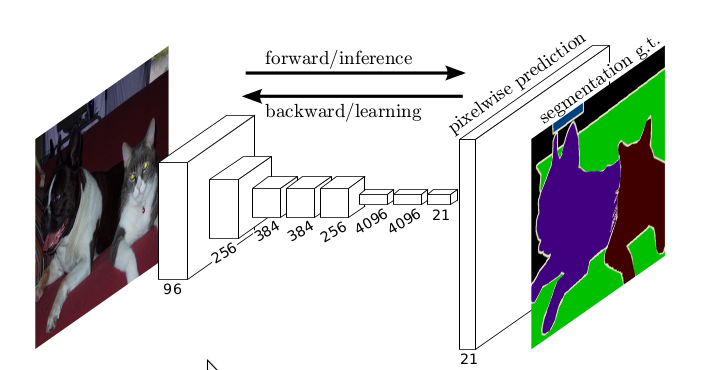
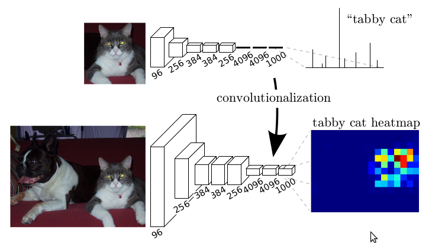
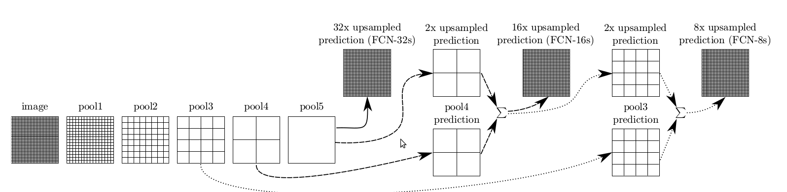
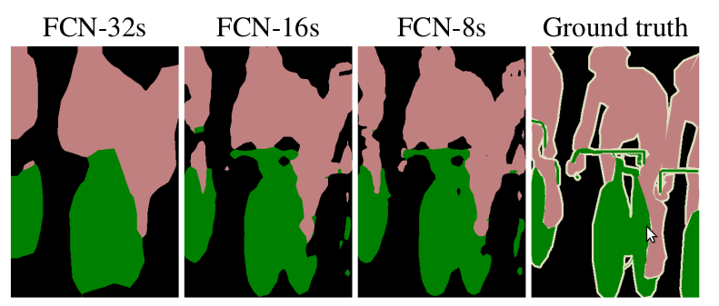

Fully convolutional networks for semantic segmentation
Convolutional networks are powerful visual models that yeild hierarchies of features. We show that convolutional networks by themselves, trained end-to-end, pixels-to-pixels, exceed the state-of-the-art in semantic segmentation. Our key insight is to build "fully convolutional" networks that take input of arbitrary size and produce correspondingly-sized output with efficient inference and learning. We define and detail the space of fully convolutional networks, explain their application to spatially dense prediction tasks, and draw connections to prior models. We adapt contemporary classification networks [AlexNet, Vgg Net, and GoogLeNet] into fully convolutional networks and transfer their learned representations by fine-tuning to the segmentation task. We then define a novel architecture that combines semantic information from a deep, coarse layer with appearance information from a shallow, fine layer to produce accurate and detailed segmentations. Our fully convolutional network achieves state-of-the-art segmentation of PASCAL VOC(20% relative improvement to 62.2% menu IU on 2012) NYUDv2, and SIFT Flow , while inference takes less than one fifth of a second for a typical image.
Convolutional networks are driving advances in recognition.Convnets are not only improving for whole-image classification ,but also making progress on local tasks with structured output.These include advances in bounding box object detection, part and keypoint prediction and local correspondence.
The natural next step in the progression from coarse to fine inference is to make a prediction at every pixel. Prior approaches have used convnets for semantic segmentation, in which each pixel is labeled with the class of its enclosing object or region, but with shortcomings that this work addresses.

Fully convolutional networks can efficiently learn to make dense predictions for per-pixel tasks like semantic segmentation.
We show that a fully convolutional network (FCN) trained end-to-end, pixels-to-pixels on semantic segmentation exceeds the state-of-the-art without further machinery.To our knowledge, this is the first work to train FCNs end-to-end for pixelwise prediction and from supervised pre-training . Fully convolutional versions of existing networks predict dense outputs from arbitrary-sized inputs.Both learning and inference are performed whole-image-at-a-time by dense feedforward compution and backpropagation. In-network upsampling layers enable pixelwise prediction and learning in nets with subsampled pooling.
This method is efficient, both asymptotically 渐进 and absolutely, and precludes排除 the need for the complications in other works.Patchwise training is common, but lacks the efficiency of fully convolutional training. Our approach does not make use of pre- and post-processing complications including superpixels, proposals建议, or post-hoc refinement 事后改进 by random fields or local classifiers. Our model transfers recent success in classification, to dense predicition by reinterpreting重新解释 classification nets as fully convolutional and fine-tuning from their learned representations. In contrast, previous works have applied small convnets without supervised pre-training.
Sementic segmentation faces an inherent tension between semantics and location: global information resolves what while local information resolves where.Deep feature hierarchies jointly encode location and semantics in a local-to-global pyramid. We define a novel 'skip' architecture to combine deep, coarse, semantic information and shallow, fine, appearance information in Section 4.2
In the next section, we review related work on deep classification nets, FCNs, and recent approaches to semantic segmentation using convnets. The following sections explain FCN design and dense prediction tradeoffs, introduce our architecture with in-network upsampling and multilayer combinations, and describe our experimental frame-work. Finally, we demonstrate state-of-the-art results on PASCAL VOL 2011-2, NYUDv2, and SIFT Flow.
- Related work
Our approach draws on recent successes of deep nets for image classification and transfer learning. Transfer was first demonstrated on various visual recognition tasks, then on detection, and on both instance and semantic segmentation in hybrid混合 proposal-classifier建议分类器models. We now re-architect and finetune classification nets to direct, dense prediction of semantic segmentation. We chart the space of FCNs and situate prior models, both historical and recent, in this framework.
Fully convolutional networks . To our knowledge, the idea of extending a convnet to arbitrary-sized inputs first appeared in Matan et al. which extended the classic LeNet to recognize strings of digits. Because their net was limited to one-dimensional input strings, Matan et al. used Viterbi decoding to obtain their outputs. Wolf and Platt expand convnet outputs to 2-dimensional maps of detection scores for the four corners of postal address blocks.Both of these historical works do inference and learning fully convolutionally for detection. Ning et al. define a convnet for coarse multiclass segmentation of C. elegans tissues with fully convolutional inference.
Fully convolutional computation has also been exploited利用 in the present era of many-layered nets. Sliding window detection by Sermanet et al. semantic segmentation by Pinheiro and Collobert , and image restoration恢复 by Eigenet al. do fully convolutional inference. Fully convolutional training is rare罕见, but used effectively by Tom to learn an end-to-end part detector and spatial model for pose estimation, although they do not exposit暴露 on or analyze this method.
Alternatively, He discard丢弃 the nonconvolutional portion部分 of classification nets to make a feature extractor. They combine proposals and spatial pyramid pooling to yield a localized, fixed-length feature for classification. While fast and effective, this hybrid model cannot be learned end-to-end.
Dense prediction with convnets. Serveral recent works have applied convnets to dense prediction problems, including semantic segmentation by Ning et al. Farabet et al. and Pinheiro and Collebert; boundary prediction for electron microscopy by Ciresan et al. and for natural images by a hybrid neural net/nearest neighbor model by Ganin and Lempitsky; and image restoration and depth estimation by Eigen et al. Common elements of these approaches include
- smalll models restricting capacity and receptive fields;
- patchwise training
- post-processing后处理 by spuerpixel projection, random field regularization, filtering, or local classification;
- input shifting and output interlacing for dense output as introduced by OverFeat;
- multi-scale pyramid processing
- saturating tanh nonlinearities and
- ensembles
whereas our method does without this machinery. However we do study patchwise training and "shift-and-stitch" dense output from the perspective of FCNs. We also discuss in-network upsampling, of which the fully connected prediction by Eige is a special case.
Unlike these existing methods, we adapt and extend deep classification architectures, using image classification as supervised pre-training, and fine-tune fully convolutionally to learn simply and efficiently from whole image inputs and whole image ground thruths.
Fully convolutional networks
Each layer of data in a convnet is a three-dimensional array os size $h\times\omega\times d$ ,where $h$ and $\omega$ are spatial dimensions , and $d$ is the feature or channel dimension.The first layer is the image, with pixel size $h\times\omega$ ,and $d$ color channels. Locations in higher layers correspond to locations in the image they are path-connection to , which are called their receptive fields.
Convnets are built on translation invariance. Their basic components (convolution, pooling and activation functions) operate on local input regions, and depend only on relative spatial coordinates. Writing $x_{ij}$ for the data vector at location $(i,j)$ in a particular layer, and $y_{ij}$ for the following layer, these functions compute outputs$y_{ij}$ by
where $k$ is called the kernel size, $s$ is the stride or subsampling factor, and $f_{ks}$ determines the layer type: a matrix multiplication for convolution or average pooling, a spatial max for max pooling, or an elementwise nonlinearity for an activation function, and so on for other types of layers.
This functional form is maintained under composition, with kernel size and stride obeying the transformation rule
While a general deep net computes a general nonlinear function, a net with only layers of this forrm computes a nonlinear filter, which we call a deep filter or fully convolutional network. An FCN naturally operates on an input of any size, and produces an output of corresponding (possibly resampled ) spatial dimensions.
A real-valued loss function composed with an FCN defines a task. If the loss function is a sum over the spatial dimensions of the final layer, $\ell\left(x;\theta\right)=\sum_{ij}\ell'\left(x_{ij};\theta\right)$, its gradient will be a sum over the gradients of each of its spatial components. Thus stochastic gradient descent on $\ell$computed on whole images will be the same as stochastic gradient descent on $\ell'$ ,taking all of the final layer receptive fields as a minibatch.
When these receptive fields overlap significantly, both feedforward computation and backpropagation are much more efficient when computed layer-by-layer over an entire image instead of independently patch-by-patch.
We next explain how to convert classification nets into fully convolutional nets that produce coarse output maps.For pixelwise prediction, we need to connect these coarse outputs back to the pixels. Section 3.2 describes a trick that OverFeat introduced for this purpose.We gain insight into this trick by reinterpreting重新解释 it as an equivalent 等效 network modification. As an efficient，effective alternative, we introduce deconvolution layers for upsampling in Section 3.3. In Section 3.4 we consider training by patchwise sampling, and give evidence证据 in Section 4.3 that our whole image training is faster and equally effective.
3.1 Adapting classifiers for dense prediction
Typical recognition nets, including LeNet, AlexNet, and its deeper successors, ostensibly似乎 take fixed-sized inputs and produce nonspatial outputs. The fully connected layers of these nets have fixed dimensions and throw away spatial coordinates. However, these fully connected layers can also be viewed as convolutions with kernels that cover their entire input regions. Doing so casts them into fully convolutional networks that take input of any size and output classification maps. This transformation is illustrated in Figure 2.

Transforming fully connected layers into convolution layers enables a classification net to output a heatmap. Addding layers and a spatial loss produces an efficient machine for end-to-end dense learning.
By contrast nonconvolutional nets, such as the one by Le et al , lack this capability.
Furthermore, while the resulting maps are equivalent to the evaluation of the original net on particular input patches, the computation is highly amortized摊销 over the overlapping regions of those patches. For example, while AlexNet takes 1.2 ms (on a typical gpu) to produce the classification scores of a 227x227 image, the fully convolutional version takes 22ms to produce a 10x10 grid of outputs from a 500x500 image, which is more than 5 times faster than 5 times faster than the native approach.
The spatial output maps of these convolutionalized models make them a natural choice for dense problems like semantic segmentation. With ground truth available at every output cell, both the forward and backward passes are straightforward , and both take advantage of the inherent固有 computational efficiency (and aggressive积极 optimization ) of convolution.
The corresponding backward times for the AlexNet example are 2.4ms for a single image and 37ms for a fully convolutional 10x10 output map, resulting in a speedup similar to that of the forward pass. This dense backpropagation is illustrated in Figure 1.
While our reinterpretation of classification nets as fully convolutional yields output maps for inputs of any size, the output dimensions are typically reduced by subsampling.The classification nets subsample to keep filters small and computational requirements reasonable. The coarsens the output of a fully convolutional version of these nets, reducing it from the size of the input by a factor equal to the pixel strie of the respective fields of the output units.
3.2 Shift-and-stitch is filter rarefaction
Input shifting and output interlacing is a trick that yields dense predictions from coarse outputs without interpolation, introduced by OverFeat.If the outputs are downsampled by a factor of $f$ , the input is shifted (by left and top padding) $x$ pixels to the right and $y$ pixels down, once for every value of $(x,y)\in{0,...,f-1}\times{0,...,f-1}$. There $f^2$ inputs are each run through the convnet, and the outputs are interlaced交错 so that the predictions correspond to the pixels at the centers of their respective fields.
Changing only the filters and layer strides of a convnet can produce the same output as this shift-and-stitch trick.Consider a layer (convolution or pooling ) with input strides, and a following convolution layer with filter weights $f_{ij}$ (eliding the feature dimensions, irrelevant无关紧要的 here).Setting the lower layer's input stride to 1 upsamples its output by a factor of $s$ , just like shift-and-stitch. However, convolving汇流 the original filter with the upsampled output does not produce the same result as the trick, because the original filter only sees a reduced portion of its (now upsampled) input. To reproduce the trick, rarefy the filter by enlarging it as
(with $i$ and $j$ zero-based). Reproducing the full net output of the trick involves repeating this filter enlargement layer-by-layer untill all subsampling is removed.
Simply decreasing subsampling within a net is a tradeoff权衡: the filters see finer information, but have smaller receptive fields and take longer to compute. We have seen that the shift-and-stitch trick is another kind of tradeoff: the output is made denser without decreasing the respective field sizes of the filters, but the filters are prohibited 禁止 from accessing information at a finer scale than their original design.
Although we have done preliminary 初步 experiments with shift-and-stitch, we do not use it in our model. We find learning through upsampling, as described in the next section, to be more effecitve and efficient, especially when combined with the skip layer fusion described later on.
3.3 Upsampling is backwards strided convolution
Another way to connect coarse outputs to dense pixels is interpolation插值. For instance, simple bilinear双 interpolation computes each output $y_{ij}$ from the nearest four inputs by a linear map that depends only on the relative positions of the input and output cells.
In a sense, upsampling with factor $f$ is convolution with a fractional 分数 input stride of $1/f$. So long as $f$ is integral完整的, a natural way to upsample is therefore backwards convolution (sometimes called deconvolution) with an output stride of $f$ . Such an operation is trivial 琐碎 to implement, since it simply reverse反向 the forward and backward passes of convolution. Thus upsampling is preformed in-network for end-to-end learning by backpropagation from the pixelwise loss.
Note that the deconvolution filter in such a layer need not be fixed(e.g. to bilinear upsampling), but can be learned.A stack of deconvolution layers and activation functions can even learn a nonlinear upsampling.
In our experiments, we find that in-network upsampling is fast and effective for learning dense prediction. Our best segmentation architecture uses these layers to learn to upsample for refined prediction in Section 4.2.
3.4 Patchwise training is loss sampling
In stochastic随机 optimization, gradient computation is driven by the training distribution. Both patchwise training and fully-convolutional training can be made to produce any distribution, although their relative computational efficiency depends on overlap and minibatch size. Whole image fully convolutional training is identical to patchwise training where each batch consists of all the respective fields of the units below the loss for an image (or collection of images). While this is more efficient than uniform 均匀sampling of patches.it reduces the number of possible batches. However, random selection of patches within an image may be recovered simply. Restricting the loss to a randomly sampled subset of its spatial terms(or, equivalently applying a DropConnect mask between the output and the loss) excludes patches from the gradient computation.
If the kept patches still have significant overlap, fully convolutional computation will still speed up training. If gradients are accumulated 积累 over multiple backward passes, batches can include patches from several images.
Sampling in patchwise training can correct class imbalance and mitigate减轻 the spatial correlation 相关 of dense patches. In fully convolutional training, class balance can also be achieved by weighting the loss, and loss sampling can be used to address spatial correlation.
We explore training with sampling in Section 4.3, and do not find that it yields faster or better convergence for dense prediction. Whole image training is effective and efficient.
4. Segmentation Architecture
We cast ILSVRC classifiers into FCNs and augment them for dense prediction with in-network upsampling and a pixelwise loss. We train for segmentation by fine-tuning. Next, we build a novel skip architecture that combines coarse, semantic and local, appearance information to refine prediction.
For this investigationd调查, we train and validate on the PASCAL VOC 2011 segmentation challenge. We train with a per-pixel multinomial多项式 logistic loss and validate with the standard metric of mean pixel intersection路口 over union, with the mean taken over all classes, including background. The training ignores pixels that are masked out (as ambiguous or difficult) in the ground truth.
4.1 From classifier to dense FCN
We begin by convolutionalizing 汇流 proven classification architectures as in Section 3. We consider the AlexNet architecture that won ILSVRC12, as well as the VGG nets and the GoogleLeNet which did exceptionally well in ILSVRC14. We pick the VGG 16 layer net, which we found to be equivalent to the 19-layer net on this task. For GoogleLeNet,we use only the final loss layer, and improve performance by discarding丢弃 the final average pooling layer. We decapitate 斩首 each net by discarding the final classifier layer, and convert all fully connected layers to convolutions. We append a 1x1 convolution with channel dimension 21 to predict scores for each of the PASCAL classes (including background) at each of the coarse output locations, followed by a deconvolution layer to bilinearly upsample the coarse outputs to pixel-dense outputs as described in Section 3.3. Table 1 compares the preliminary初步 validation results along with the basic characteristics of each net. We report the best results achieved after convergence 掩盖 at a fixed learning rate (at least 175 epochs).
Fine-tuning from classification to segmentation gave reasonable predictions for each net. Even the worst model achieved ~75% of state-of-the-art performace . The segementation-equippped VGG net (FCN-VGG16) already appears to be state-of-the-art at 56.0 mean IU on val, compared to 52.6 on test. Training on extra data raises performance to 59.4 mean IU on a subset of val. Training details are given in Section 4.3.
Despite similar classification accuracy, our implementation of GoogLeNet did not match this segmentation result.
4.2 Combining what and where
We did a new fully convolutional net (FCN) for segmentation that combines layers of the feature hierarchy层次 and refines the spatial precision of the output. See Figure 3.

Our DAG nets learn to combine coarse, high layer information with fine, low layer information. Layers are shown as grids that reveal 揭示 relative spatial coarseness.Only pooling and prediction layers are shown;intermediate convolution layers（include our converted fully connected layers） are omitted省略. Solid line(FCN-32s) : Our single-stream net, described in Section 4.1, upsamples stride 32 predictions back to pixels in a single step. Dashed虚线 line (FCN-16s):Combining predictions from both the final layer and the $pool4$ layer, at stride 16, lets our net predict finer details, while retaining high-level semantic information. Dotted点缀 line(FCN-8s): Additional predictions from pool3, at stride 8, provide further precision.
While fully convolutionalized classifiers can be finetuned to segmentation as shown in 4.1, and even score highly on the standard metric, their output is dissatisfyingly coarse(see Figure 4).

Refining精炼 fully convolutional nets by fusing information from layers with different strides improves segmentation detail. The first three images show the output from our 32, 16 and 8 pixel stride nets.
The 32 pixel stride at the final prediction layer limits the scale of detail in the upsampled output.
We address this by adding links that combine the final predictin layer with lower layers with finer strides. We adapt and extend three classification convnets to segmentation. We compare performance by mean intersection over union on the validation set of PASCAL VOL 2011 and by inference time (averaged over 20 trails for a 500x500 input on an NVIDIA Tesla K40c). We detail the architecture of the adapted nets as regards dense prediction: number of parameter layers, receptive field size of output units, and the coarsest最粗燥 stride within the net.(These numbers give the best performance obtained at a fixed learning rate, not best performance possible).
As they see fewer pixels, the finer scale predictio ns should need fewer layers, so it makes sense to make them from shallower net outputs. Combining fine layers and coarse layers lets the model make local predictions that respect global structure. By analogy to the multiscale local jet of Florack et al, we call our nonlinear local feature hierarchy the deep jet.
We first divide the output stride in half by predicting from a 16 pixel stride layer. We add a $1\times1$ convolution layer on top of $pool4$ to produce additional class predictions. We fuse this output with the predictions computed on top of $conv7$ （convolutionalized $fc7$）at stride 32 by adding a $2\times$ upsampling layer and summing both predictions. We initialize the $2\times$ upsampling